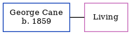

George Cane 1859 -
[ Home ] | [ Calendar ] | [ Surnames Index ] | [ Errors ] | [ Family History ]George Cane, the husband of Annie Pope (the second cousin three-times-removed on the father's side of Nigel Horne), was born in 18591,2. He married Annie at Ss Mary & Eanswith, Folkestone, Kent, England on 3 Sept 18793.
Citations
- England Marriages 1538-1973 - Findmypast
- Kent Marriages And Banns - Findmypast
- England & Wales Marriages 1837-2005 - Findmypast
Media
England & Wales marriages 1837-2005 - BMD/M/1879/3/AZ/000041/197
England Marriages 1538-1973 - R_848370890
Kent marriages and banns - GBPRS/CANT/M/97002866/1
Family Tree
Map
Generated by ged2site. Last updated on Jul 3, 2024
Known Issues
Date of birth is known, but not place